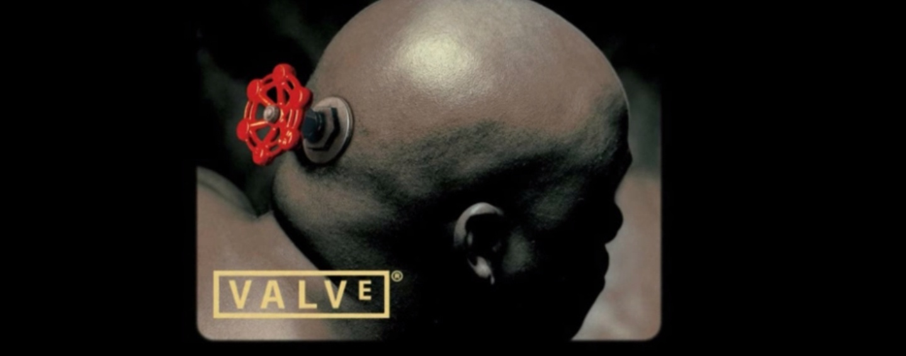
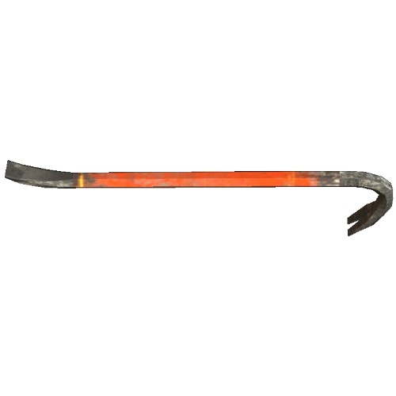
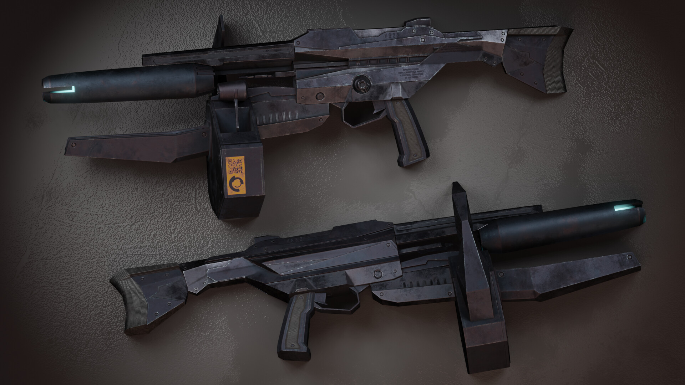
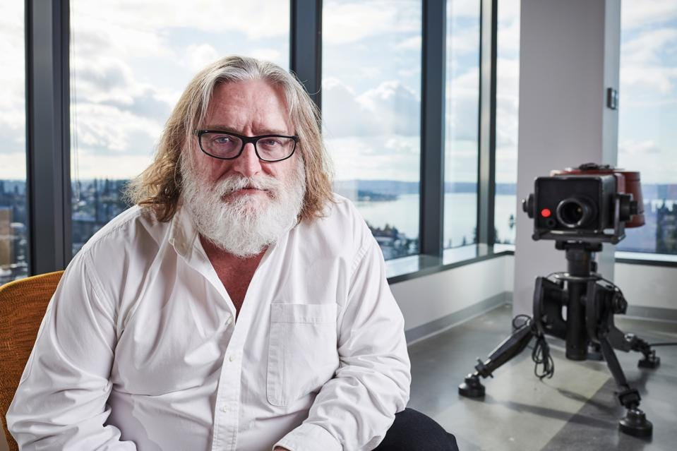

VALVE

Valve Corporation з'явилася у 1996 році, коли двоє співробітників Microsoft — Гейб Ньюелл та Майк Гаррінгтон — вирішили залишити успішну кар'єру в галузі програмного забезпечення та створити власну студію відеоігор. На той момент індустрія комп'ютерних ігор стрімко розвивалася, а Ньюелл був переконаний, що ігри стануть однією з найважливіших сфер комп'ютерних технологій майбутнього. Значну частину стартового капіталу він вклав із власних заощаджень. Назву «Valve» обрали через її простоту та символізм: клапан відкриває шлях чомусь новому. Перші два роки компанія працювала над своїм дебютним проєктом — Half-Life. Для його створення використовувався рушій гри Quake, але команда значно його переробила. У 1998 році Half-Life вийшла та стала справжньою революцією. На відміну від більшості шутерів того часу, гра пропонувала не лише стрілянину, а й цілісну історію, продуманий світ і сюжет, який розгортався прямо під час гри. Проєкт отримав десятки нагород і став однією з найвпливовіших ігор усіх часів. Успіх Half-Life привів до появи численних модифікацій. Однією з них стала Counter-Strike, створена фанатами Мінем Ле та Джессом Кліффом. Valve швидко побачила потенціал проєкту, запросила авторів до співпраці та офіційно випустила гру. Counter-Strike стала феноменом і фактично заклала основи сучасного кіберспорту. На початку 2000-х років Valve зіткнулася з проблемою поширення та оновлення ігор через Інтернет. Щоб розв'язати це питання, компанія почала розробку власної цифрової платформи. Так у 2003 році з'явився Steam. Спочатку сервіс використовувався лише для автоматичного оновлення ігор Valve, але поступово перетворився на цифровий магазин, де могли продавати свої ігри й інші розробники. На старті багато гравців критикували Steam за обов'язкову реєстрацію та постійне підключення до Інтернету, проте з часом сервіс став стандартом для всієї індустрії. У 2004 році Valve випустила Half-Life 2. Гра отримала новий рушій Source, вражаючу на той час фізику та графіку. Вона стала однією з найкращих ігор свого покоління і зміцнила репутацію компанії як одного з найсильніших розробників у світі. Протягом наступних років Valve створила низку культових проєктів: Portal, Team Fortress 2, Left 4 Dead, Portal 2 та Dota 2. Кожна з цих ігор залишила помітний слід в історії відеоігор. Паралельно Steam стрімко зростав. Якщо на початку сервіс використовувався лише для кількох ігор Valve, то вже до середини 2010-х років він став найбільшим цифровим магазином комп'ютерних ігор у світі. Саме Steam приніс компанії величезні доходи та зробив її однією з найдорожчих приватних компаній ігрової індустрії. Після 2013 року Valve почала менше випускати нові великі ігри й більше інвестувати в технології. Компанія працювала над операційною системою SteamOS, підтримувала розвиток Linux як ігрової платформи, створювала власне обладнання та експериментувала з віртуальною реальністю. У різні роки були представлені Steam Controller, Steam Machine та Valve Index. Особливо успішною стала гарнітура Valve Index, яка вважається однією з найкращих VR-систем свого часу. У 2020 році Valve несподівано повернулася до серії Half-Life, випустивши Half-Life: Alyx. Проєкт був створений спеціально для віртуальної реальності та отримав надзвичайно високі оцінки критиків і гравців. Гра довела, що Valve все ще здатна створювати інноваційні проєкти світового рівня. Ще одним важливим кроком став випуск у 2022 році портативного комп'ютера Steam Deck. Пристрій дозволив запускати більшість ігор зі Steam у форматі портативної консолі та став великим комерційним успіхом. Steam Deck зміцнив позиції Valve не лише як розробника програмного забезпечення, а й як виробника власного обладнання. Станом на 2026 рік Valve залишається приватною компанією, контроль над якою значною мірою зберігає Гейб Ньюелл. Steam є найбільшою платформою цифрової дистрибуції ПК-ігор у світі, Counter-Strike і Dota 2 входять до числа найпопулярніших кіберспортивних дисциплін, а сама компанія продовжує працювати над новими технологіями, іграми та пристроями. За три десятиліття Valve пройшла шлях від невеликої студії з кількох десятків працівників до однієї з найвпливовіших компаній в історії відеоігор, яка змінила не лише спосіб створення ігор, а й спосіб їх продажу, поширення та підтримки.

Створення перших ігр

Робочою назвою гри було "Quiver". Для роботи над сценарієм було запрошено письменника-фантаста Марка Лейдлоу. Гра стала науково-фантастичним тривимірним шутером від першої особи, оскільки Ньюелл і Харрінгтон вважали, що екшн є єдиним жанром, де можна вигадати щось нове. За задумом атмосфера Half-Life повинна була бути схожою на похмуру атмосферу Doom і, певною мірою, стати її переосмисленням. Концепція світу гри повинна була бути схожою на повість Стівена Кінга "Туман". Вперше гру показали на виставці E3 у 1997 році, де стала справжнім хітом та отримала нагороду найкраща гра шоу. Реліз планувався до кінця року, проте з технічних причин було перенесено. До кінця 1997 року автори гри вирішили, що більшість зробленого необхідно переробити. Паралельно з Half-Life йшла розробка іншого неанонсованого проекту, яким, мабуть, має стати Prospero. Вона скасована для зосередження сил розробки Half-Life. Спочатку Valve збиралася випустити гру навесні, потім у червні, потім просто влітку, потім у вересні та після цього, нарешті, на Різдво. Постійні перенесення дати релізу спричиняли занепокоєння Sierra. На виставці E3 у 1998 році Half-Life знову отримав нагороду найкраща гра шоу. До випуску Half-Life компанія випустила демоверсію Day One. Незабаром її стали безкоштовно розповсюджувати разом із відеокартами. Вже незабаром демо-версія набула величезної популярності. Коли розробка була близька до завершення, залишалася лише одна маленька програмна помилка. Більшість співробітників вже нічого не робила. Коли помилку було знайдено, було записано копію гри, яка була відправлена на тестування. Реліз гри був відзначений у Valve знищенням хедкрабу-піньяту. Нарешті після закінчення розробки, за словами Марка Лейдлоу, люди повернулися до вже забутого ними звичайного життя. Після річної відпустки ці люди знову зібралися для роботи над Team Fortress, а потім і над Half-Life 2 яка стала пізніше однією з найкращих ігор всією індустрії.


Steam


Стім – це найбільша у світі платформа цифрової дистрибуції комп'ютерних ігор. Через неї можна купувати, завантажувати, оновлювати та запускати ігри, а також спілкуватися з друзями, користуватися майстернею модів, хмарними збереженнями та іншими сервісами. Платформу запустила компанія Valve Corporation у 2003 році. Спочатку Steam використовувався для автоматичних оновлень ігор Valve, але згодом став найбільшим магазином ПК-ігор. Гейб Ньюелл - Працював у Microsoft близько 13 років. Разом із Майком Гаррінгтоном заснував Valve у 1996 році. Наразі, Гейб Ньюелл являється головною публічною особою компанії та одним із творців Steam. Майк Гаррінгтон також працював у Microsoft разом з своїм приятелем, і пізніше, також із Ньюеллом профінансував створення Valve та першої гри компанії — Half-Life. У 2000 році залишив Valve, продавши свою частку Ньюеллу. Попри це, Гаррінгтон ніколи публічно не висловлював жалю щодо свого рішення.
 Portal: Revolution
Portal: Revolution  Black Mesa
Black Mesa  Entropy Zero 2
Entropy Zero 2